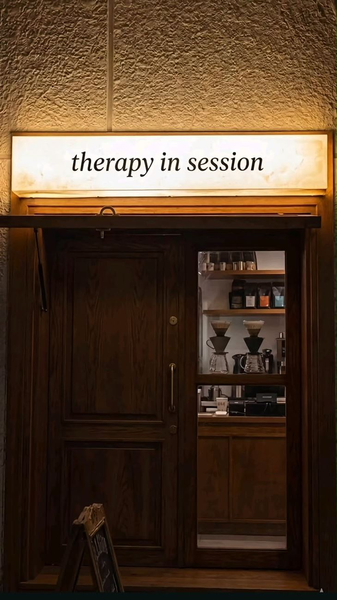

Ясная картина
ситуации
Вы отделяете факты от опасений и видите, что на самом деле происходит.
Коучинг для руководителей и тех, кто на перепутье
Вы не обязаны принимать решение сегодня. Достаточно увидеть, из чего оно состоит. Индивидуально и онлайн.
Написать в TelegramЧто вы получаете
Коучинг не гарантирует конкретного результата. Он даёт материал для решения, которое вы принимаете сами.
Вы отделяете факты от опасений и видите, что на самом деле происходит.
Понятно, какие пути действительно существуют и по каким критериям между ними выбирать.
Каждая сессия заканчивается ближайшими действиями, а не общим «надо что-то менять».
Как устроена работа
Конфиденциально. Решение остаётся за вами.
Обо мне
Моя задача на сессии в том, чтобы вы увидели свою ситуацию ясно и выбрали свой шаг. Я задаю вопросы, после которых ответ становится виден вам самим.
Рабочие ситуации не придётся долго объяснять: я знаю их изнутри, поэтому мы сразу переходим к вашему вопросу.
Запросы
Когда ни один из вариантов не очевиден или работа требует навыков, которым нигде не учили.
Как проходит сессия
Вы не получите готовых рецептов. Вы увидите свою ситуацию ясно и сами выберете, что делать дальше.
Отделить сам запрос от шума вокруг него.
У вас: точная формулировка того, что на самом деле беспокоит
Что известно, что является предположением, где реальные развилки и что мешает.
У вас: карта ситуации вместо круга одних и тех же мыслей
Ресурсы, ценности, прошлый опыт и ограничения, которые стоит принять всерьёз.
У вас: понимание, на что вы можете рассчитывать
Ближайшие действия, а не общие намерения.
У вас: шаги, которые можно начать делать сразу

Если вы узнаёте себя
Мы не ищем правильный ответ. Мы выясняем, что именно для вас сейчас важно.
Форматы и цены
Один формат для любого запроса: индивидуально и онлайн.
Бесплатно
Вы проговариваете запрос и понимаете, подходит ли вам формат.
Записаться9 000 ₽ / €100
Если есть один конкретный вопрос. Вы уходите с разобранной ситуацией и планом шагов.
ВыбратьДля перехода в несколько шагов
32 000 ₽ / €360
Между сессиями вы пробуете решения и возвращаетесь с результатами.
Выбрать61 000 ₽ / €680
Для смены роли или направления: опора от начала до первых результатов.
ВыбратьВсе услуги только онлайн. Оплата 100% заранее. Перенос сессии бесплатно при уведомлении не позднее чем за 24 часа. Срок действия пакета отсчитывается с даты оплаты. Полные условия в публичной оферте.
Консультационные и коучинговые услуги направлены на постановку целей, поиск решений и планирование действий. Они не являются психотерапией, психиатрической помощью или медицинской консультацией и не заменяют их.
Отзывы
[ЗАПОЛНИТЬ: текст отзыва с согласия клиента]
FAQ
Коучинг работает с целями, решениями и планом действий. Психотерапия занимается лечением и психологическими состояниями. Консультационные и коучинговые услуги направлены на постановку целей, поиск решений и планирование действий. Они не являются психотерапией, психиатрической помощью или медицинской консультацией и не заменяют их.
Первая встреча ознакомительная и бесплатная, она длится 15 минут и проходит онлайн. Вы коротко рассказываете о запросе, я объясняю, как устроена работа. Вместе решаем, подходит ли вам этот формат. Встреча ни к чему не обязывает.
Это зависит от запроса. С одним конкретным вопросом бывает достаточно разовой сессии. Переходы, которые требуют нескольких шагов, удобнее разбирать в пакете из 4 или 8 сессий. Формат можно обсудить на ознакомительной встрече.
Индивидуально и онлайн, сессия длится 60 минут. Платформа: [ЗАПОЛНИТЬ: платформа для видеосвязи]. Каждая сессия идёт по четырём шагам: запрос, разбор, опоры, план действий.
Цены указаны в рублях и в евро. Способы оплаты в евро: [ЗАПОЛНИТЬ: способы оплаты из-за рубежа]. Оплата вносится полностью до начала сессии или пакета.
Сессию можно перенести бесплатно, если предупредить не позднее чем за 24 часа. Остальные случаи описаны в публичной оферте.
Да. Как коуч ICF я следую Этическому кодексу ICF, который требует сохранять конфиденциальность клиента. Порядок обработки ваших данных описан в политике конфиденциальности.
Нет. Результат зависит не только от сессий, но и от ваших действий между ними. С моей стороны есть структура работы и внимание к вашему запросу, а решения и шаги остаются за вами.
Напишите в Telegram, чтобы договориться о бесплатной встрече на 15 минут. Вы проговорите запрос и решите, нужен ли следующий шаг.
[ЗАПОЛНИТЬ: ссылка на Telegram]